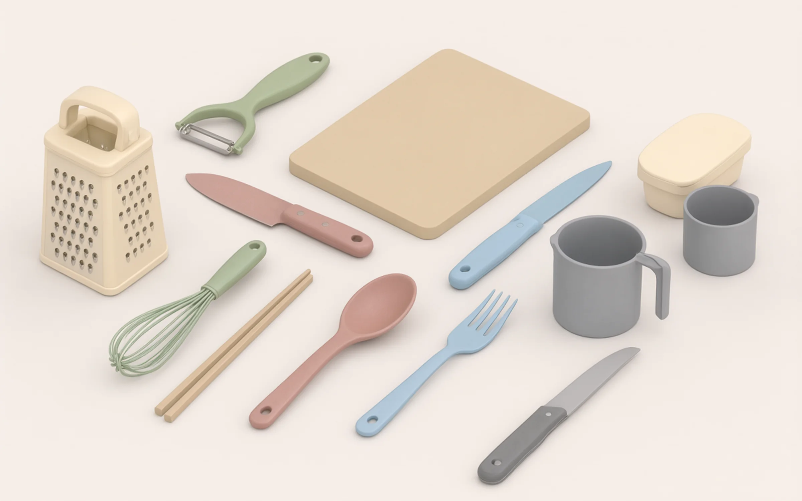
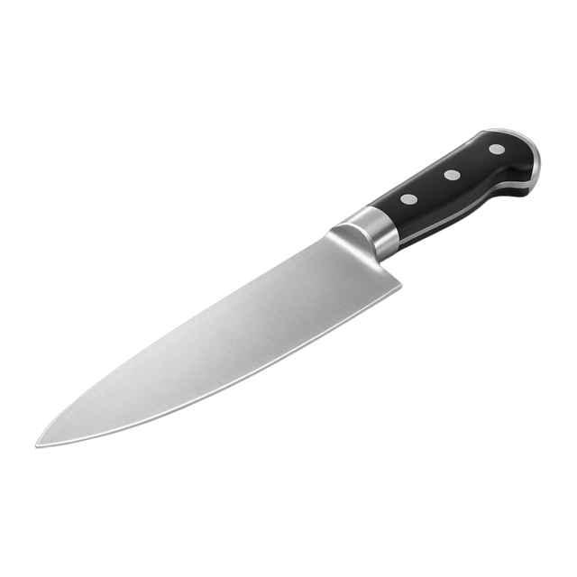
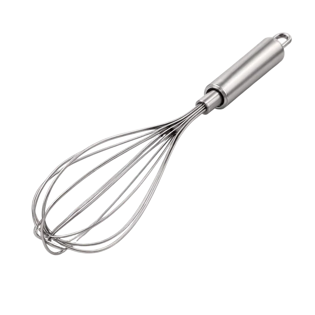
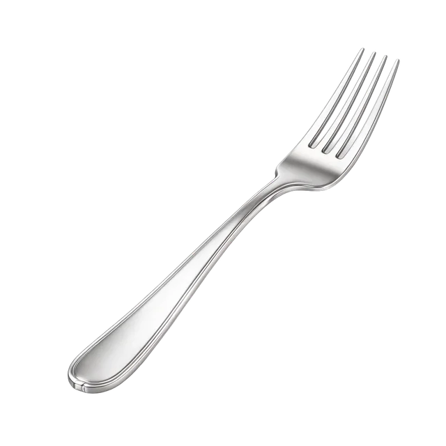
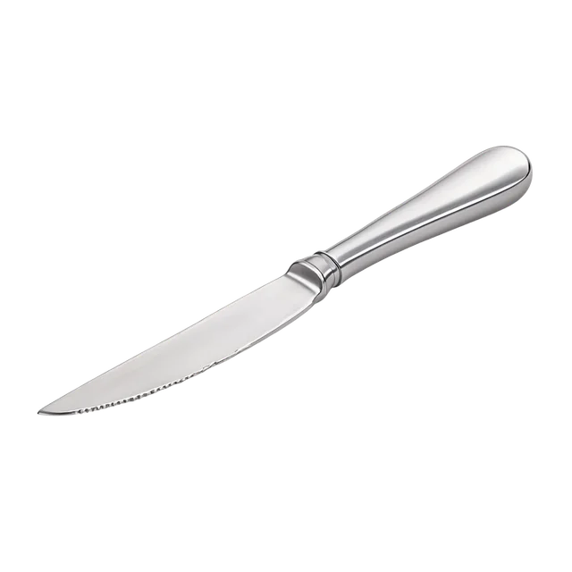

厨房
家居
服装
食物
身体部位
美妆与护肤
出行
Prep
备餐台面
场景
卡片
女声
男声

指到或点一下物品
再听一次
grater
peeler
cutting board
kitchen knife
paring knife
measuring cup
food container
whisk
chopsticks
spoon
fork
table knife
grater
刨丝器
peeler
削皮刀
cutting board
砧板

kitchen knife
菜刀
paring knife
削皮小刀
measuring cup
量杯
food container
保鲜盒

whisk
打蛋器
chopsticks
筷子

spoon
汤匙

fork
叉子

table knife
餐刀
‹ Cooktop 灶台区
厨房
Appliances 小家电 ›